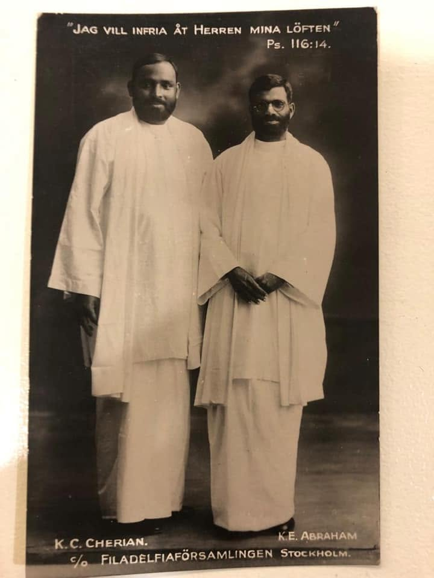
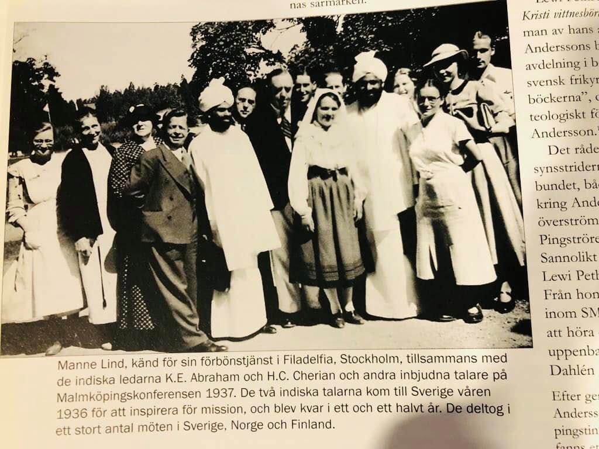

Filadelfiaförsamlingen, Stockholm · 1937
↓Jag vill infria åt Herren mina löften
Psalm 116:14 · as printed on his portrait card, Stockholm 1937
K.C. Cherian was born in Mezhuveli, Kerala, and became one of the founding voices of India's Pentecostal movement. Baptised in 1921 and filled with the Holy Spirit in 1924, he gave his life to the Gospel — pioneering churches, crossing continents, and refusing to let illness slow his calling.
By the late 1920s he was working with Pastor K.E. Abraham to unite India's independent Pentecostal assemblies into a single body. On 7 September 1933, he arrived in Mangalore and began the IPC's expansion into Karnataka — the work spread to Hubli and Udupi. In 1935, when the Indian Pentecostal Church of God was registered with the Government of India, he became its first Vice-President.
He battled diabetes throughout his ministry and kept working. "He worked for Christ," the records say, "till he was called to his eternal home" — on 26 May 1954.
Born in Mezhuveli, Kerala
Baptised
Filled with the Holy Spirit; Pentecostal ministry begins
Works with Pastor K.E. Abraham to unite Pentecostal churches across India
Arrives in Mangalore; pioneers IPC ministry in Karnataka. The work spreads to Hubli and Udupi.
IPC formally registered at Eluru (Reg. No. 9/1935–36); elected Vice-President
Invited by Swedish Pentecostal Churches; travels with K.E. Abraham to Sweden, Scandinavia, Switzerland and across Europe. Hosted at Filadelfiaförsamlingen, Stockholm — a missionary portrait card is made bearing Psalm 116:14 in Swedish.
Called home — remembered as one who "worked for Christ to the end."

In 1936, an invitation arrived from Swedish Pentecostal churches: two Indian pastors were asked to carry their testimony across Scandinavia and Europe. Pastor K.C. Cherian and Pastor K.E. Abraham accepted — embarking on a journey of nearly two years.
In Stockholm they were received at Filadelfiaförsamlingen — the Philadelphia Church — flagship of the Swedish movement, led by Lewi Pethrus. A formal missionary portrait card was produced. Above their names, printed in Swedish:
"Jag vill infria åt Herren mina löften"
I will fulfil my vows to the Lord · Psalm 116:14
That card made its way to Switzerland, where a family kept it for over eighty years. In 2021 — nearly seven decades after Pastor Cherian's death — it surfaced through a church connection in Edmonton, Canada. A printed card carrying a faithful man's vow across a century.
In the portrait, Pastor K.C. Cherian is the taller figure on the left.
Missionary portrait card, Filadelfiaförsamlingen, Stockholm, 1937.
K.C. Cherian (left) · Pastor K.E. Abraham (right)
Historical photograph from the Europe visit, 1937.
In July 2026, family gathered and told these stories out loud — some solemn, some laughing at their own history. They're preserved here in that spirit: family memory, not verified record.
At eighteen, K.C. Cherian heard the gospel for the first time at a Mar Thoma Convention held on a dry riverbed — moving him out of the Jacobite tradition his family had followed for generations. When he later went further still and became Pentecostal, the cost was severe: his father and uncle beat him nearly to death and threw him and his sixteen-year-old wife out of the house, telling him never to return. They walked the road with nothing. It was the first of many times his faith would cost him everything — and the first of many times it would carry him through.
Years later, as a father himself, he still had nothing to spare. Unable to pay school fees, his two sons stood outside the classroom window to listen to their lessons rather than sit inside. One of those boys would go on to become Chancellor of the Swedish Embassy in New Delhi, receiving a reigning monarch. The distance between those two moments is the whole of this family's story.
Family legend, told with a laugh: he once acquired a large, good house that had sat empty for years because it was known to be haunted — nobody else wanted it, so he got it cheap. He drove out the demons... except one, which he kept in a single room on purpose. Traveling pastors who stayed with him were tested by it: a genuine believer would be left alone, a fake one would come out slapped. He gave the demon itself instructions on exactly how to leave when it was time — proof, the family says, of who was really in charge.
Told to his grandson by his son S.K. Cherian, who witnessed it as a boy: sent by God to preach in a distant town with no money for the fare, a stranger appeared with a first-class ticket, saying only, "God told me to give this to you." At the station, a conductor tried to move him to third class. He answered that he'd command the train not to leave until he was seated in first — and it didn't. Engineers and drivers searched for the fault for hours and found nothing, until they gave up and let him sit where his ticket said. The moment he agreed, the train moved again.
A milkman, angry that his healing ministry was drawing people away from the hospital, laced his milk with poison — enough, the family says, to kill an elephant. He drank it, prayed, and walked away unharmed; the milkman, expecting to find him dead, found him well instead, and became a Christian. It was of a piece with the rest of his life in the fields — bitten by snakes often enough working the paddy that the family remembers it as routine, never once counting as a close call.
When his wife, Ammachi, contracted smallpox, she was set aside to die — the city corporation had already come to collect her body. He asked for one more night, and prayed over her until morning. She woke healed, with only a single mark on her face where the disease had been. It's the one story here that isn't about his public ministry at all — just a husband praying through the night for his wife.
Told by Bert, Rajan, Omana, and Anju Cherian — great-grandchildren of K.C. Cherian — and by S.K. Cherian ("Delhi Appacha") via Viren Joseph.